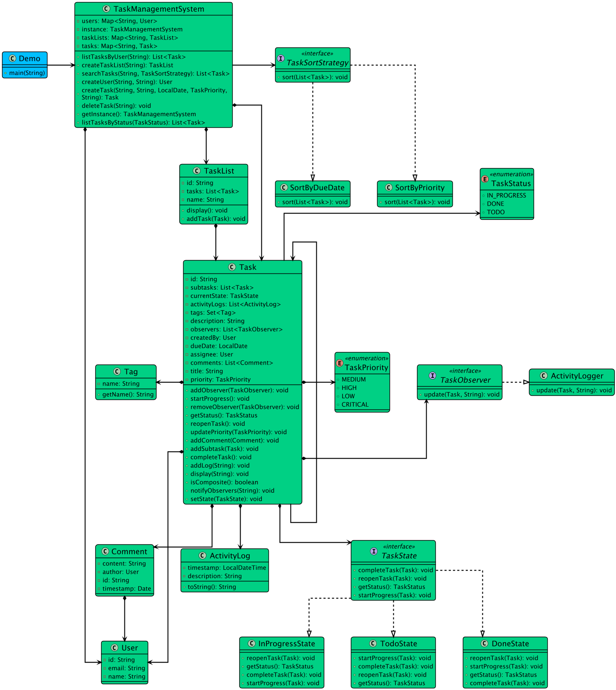

Back to Index
Module: 13 - Interview Problems Part 1Published: 2026-06-12
Designing a Task Management System
lldtask-managementcomposite-patternstate-patternobserver-pattern
📌 Designing a Task Management System
[!info] Navigation Module: [[13 - Interview Problems Part 1/index|← Interview Problems Part 1 Overview]] Prev: [[13 - Interview Problems Part 1/parking-lot|← Designing a Parking Lot System]] Next: [[13 - Interview Problems Part 1/traffic-signal-system|Designing a Traffic Signal System →]]
🎯 Step 1: Clarify Requirements
Functional Requirements
- Task CRUD: Create, read, update, and delete tasks.
- Subtasks: Support recursive task composition (a parent task can have multiple subtasks).
- Workflow Management: Tasks transition through explicit states (
TODO→IN_PROGRESS→REVIEW→COMPLETED). - Search and Sort: Flexible sorting by Priority, Due Date, or Created Date.
- Subscriptions/Notifications: Users can subscribe to a task and receive notifications when it changes.
Non-Functional Requirements
- Scalability: System should handle high read-to-write ratios.
- Extensibility: Easy to add new Task States or Sorting strategies.
🧱 Step 2: Identify Core Entities

Task: ID, title, description, priority, status, assignee, creator, subtasks (Composite), subscribers (Observer).User: ID, name, email.TaskStatus(Enum): TODO, IN_PROGRESS, REVIEW, COMPLETED, CANCELLED.Priority(Enum): LOW, MEDIUM, HIGH, URGENT.
⚙️ Step 3: Architecture & Design Patterns
- Composite Pattern: For parent tasks and recursive subtasks.
- State Pattern: To manage task workflow transitions strictly.
- Strategy Pattern: For interchangeable task sorting logic (Priority vs Due Date).
- Observer Pattern: For notifying users when a task state or assignee changes.
💻 Step 4: Core Implementation (C++)
cpp
#include <iostream>
#include <string>
#include <vector>
#include <memory>
#include <algorithm>
using namespace std;
// 1. Enums
enum class TaskStatus { TODO, IN_PROGRESS, REVIEW, COMPLETED };
enum class Priority { LOW, MEDIUM, HIGH, URGENT };
// Forward declarations
class Task;
// 2. Observer Pattern (Notifications)
class TaskObserver {
public:
virtual void update(const Task& task, const string& message) = 0;
virtual ~TaskObserver() = default;
};
class EmailNotifier : public TaskObserver {
string email;
public:
EmailNotifier(string e) : email(e) {}
void update(const Task& task, const string& message) override {
cout << "[Email to " << email << "] Task Update: " << message << endl;
}
};
// 3. State Pattern (Workflow)
class TaskState {
public:
virtual void advance(Task* task) = 0;
virtual string getStateName() = 0;
virtual ~TaskState() = default;
};
class TodoState : public TaskState {
public:
void advance(Task* task) override;
string getStateName() override { return "TODO"; }
};
class InProgressState : public TaskState {
public:
void advance(Task* task) override;
string getStateName() override { return "IN_PROGRESS"; }
};
class CompletedState : public TaskState {
public:
void advance(Task* task) override {
cout << "Task already completed!" << endl;
}
string getStateName() override { return "COMPLETED"; }
};
// 4. Composite Pattern & Subject (The Task)
class Task {
public:
int id;
string title;
Priority priority;
unique_ptr<TaskState> state;
vector<shared_ptr<Task>> subtasks;
vector<shared_ptr<TaskObserver>> subscribers;
Task(int i, string t, Priority p) : id(i), title(t), priority(p) {
state = make_unique<TodoState>();
}
// Observer Methods
void subscribe(shared_ptr<TaskObserver> observer) {
subscribers.push_back(observer);
}
void notify(const string& message) {
for (auto& sub : subscribers) sub->update(*this, message);
}
// State Methods
void advanceState() {
state->advance(this);
notify("Task moved to state: " + state->getStateName());
}
void setState(unique_ptr<TaskState> newState) {
state = move(newState);
}
// Composite Methods
void addSubtask(shared_ptr<Task> subtask) {
subtasks.push_back(subtask);
}
};
// State Transitions
void TodoState::advance(Task* task) {
task->setState(make_unique<InProgressState>());
}
void InProgressState::advance(Task* task) {
task->setState(make_unique<CompletedState>());
}
// 5. Strategy Pattern (Sorting)
class SortingStrategy {
public:
virtual void sortTasks(vector<shared_ptr<Task>>& tasks) = 0;
virtual ~SortingStrategy() = default;
};
class PrioritySortingStrategy : public SortingStrategy {
public:
void sortTasks(vector<shared_ptr<Task>>& tasks) override {
sort(tasks.begin(), tasks.end(), [](const shared_ptr<Task>& a, const shared_ptr<Task>& b) {
return a->priority > b->priority; // URGENT first
});
}
};
// Usage
int main() {
auto parentTask = make_shared<Task>(1, "Implement Login", Priority::URGENT);
auto childTask1 = make_shared<Task>(2, "Design DB Schema", Priority::HIGH);
auto childTask2 = make_shared<Task>(3, "Write API", Priority::MEDIUM);
// Composite
parentTask->addSubtask(childTask1);
parentTask->addSubtask(childTask2);
// Observer
auto alice = make_shared<EmailNotifier>("alice@company.com");
parentTask->subscribe(alice);
// State Transition
parentTask->advanceState(); // Goes to IN_PROGRESS, Notifies Alice
return 0;
}
🚨 Edge Cases Handled
- Invalid Workflow Movement: Concrete states strictly define what the next state can be. For example,
CompletedStaterefuses to advance further. - Priority Escalation: In a full implementation, adding an
URGENTsubtask can recursively traverse up the Composite tree to bump the Parent task's priority toURGENT.